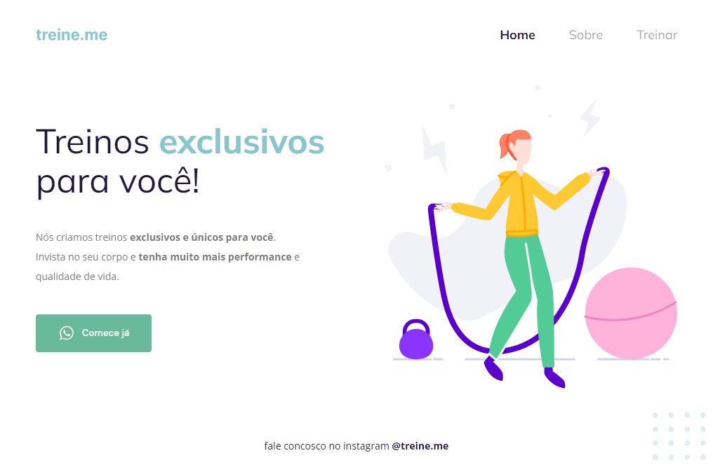

Elizandra Monteiro
Olá! Meu nome é Elizandra, Sou uma Desenvolvedora Full Stack!
Desde 2022, estou imersa na área de desenvolvimento de software, concentrando meus estudos e
esforços para me tornar uma Desenvolvedora Full Stack habilidosa. Tenho mergulhado também em Análise
de Dados, BI e tecnologias relevantes, visando criar experiências digitais excepcionais.
Almejo contribuir em projetos inovadores, somar a equipes ágeis e criar soluções que transformam
vidas.
Tecnologias
Atualmente eu tenho estudado sobre Banco de Dados, Power BI, Dashboard, NodeJS, Python e ReactJS. Gosto muito de entender como funciona bibliotecas e frameworks.
Habilidades
Data Science e Business Intelligence (BI): Power BI, Python (incluindo Pandas e Plotly).
Desenvolvimento Web: Angular, React, Node.js.
Linguagens de Programação: JavaScript, TypeScript, Python.
Autenticação e Segurança: JWT (JSON Web Tokens).
Front-End Frameworks: Angular e React.
Controle de Versão: Azure DevOps, GitHub.
Gerenciamento de Banco de Dados: SQL Server, PostgreSQL, MongoDB, SQLite.
Educação
Formação Explorer (Desenvolvimento Web) com foco em ReactJS e NodeJS - Rocketseat
Análise e Desenvolvimento de Sistemas - Faculdade Estácio de Sá (Em Andamento)
Formação Power BI- Alura
Angular - Alura
SQL Server - Desenvolvedor.io
Inglês - Wizard (Em Andamento)
Portfolio
-
Desafio GitFav - Stage 6 - Explorer - Rocketseat

Último desafio do Stage 6 - trilha Explorer da Rocketseat concluído com sucesso! Esse é o GitFav, nele você poderá favoritar usuários do Github e removê-los da lista. Nesse desafio foi abordado: Consumindo API do Github, Aprendendo a criar uma classe Screen reader only, Programação orientada a objetos (POO), Classes e heranças, Criando HTML pelo JavaScript, A importancia da imutabilidade, Conhecendo o localStorage, Métodos estáticos e promises, Async Await promises, Fluxo da aplicação com Try, Catch e Throw e Criação de tabelas no HTML.
-
FocusTimer with DarkMode - Stage 5 - Explorer - Rocketseat

Mais um desafio da Rocketseat concluído com sucesso! Feito do zero a partir de um layout do figma, eu fiz apenas algumas mudanças nas cores. O primeiro desafio era construir o focustimer 2.0, e o segundo era fazer a sua versão dark. Esses desafios são do stage 5 (avançando no JavaScript) da trilha Explorer da RocketSeat.
-
Calculadora de IMC
Nesse projeto eu aprendi como criar um modal(pop-up), e fazer ele aparecer através do JS, informando o resultado do IMC na tela. Aprendi a criar uma caixa de alerta de erro personalizada, e fazer aparecer através do JS caso o usuário digite outro caractere que não seja número, ou se deixar o input vazio. Aprendi a estruturar os dados do projeto criando uma const com um object literal, e com as estruturas organizadas eu também aprendi a deixar o código mais organizado separando por módulos, com o ES6 modules, e muito mais!
-
Formulário intermediário Rocketseat

One more Rocketseat challenge has been done, this time an amazing form \o/. Nesse desafio da Rocketseat, foi nos dado o layout desse formulário pelo figma, para que replicassemos o mais igual possível. E esse foi o resultado. Como sempre dei uma pitada de animações, deu para treinar bastante codando.
-
Desafio03 Stage02 Rocketseat

Esse foi o desafio final do stage 02 da trilha Explorer da Rocketseat. Uma landing page bem lindona. Utilizamos o figma para fazer esse projeto totalmente do zero. Por fora eu adicionei animations, transitions, transformations e responsividade.
-
Desafio02 Stage02 Rocketseat
Esse foi o segundo projeto da trilha Explorer da Rocketseat. Uma landing page simples porém muito bonita. Utilizamos o figma para fazer esse projeto. E o desafio foi deixar tudo certinho, pois propositalmente nos deram o projeto todo bagunçado, e tivemos que arrumar tudo. Por fora eu adicionei animations, transitions, transformations e responsividade.
-
Desafio01 Stage02 Rocketseat

Esse foi o primeiro projeto da trilha Explorer da Rocketseat. Uma landing page simples porém muito bonita. Utilizamos o figma para fazer esse projeto. E o desafio foi deixar tudo certinho, pois propositalmente nos deram o projeto todo bagunçado, e tivemos que arrumar tudinho, e esse foi o resultado ^^
Contato
Whatsapp: +55 11 95306 7144
E-mail: monteiroelizandra2017@gmail.com